All 13 chapters, all 10 Unit Tests of the LBA 2026–27 calendar — revision notes, the official Model Question Paper with solutions, and original practice papers in the exact official pattern.
| Part | Question type | Marks |
|---|---|---|
| I | 7 MCQs, 1 mark each | 07 |
| II | 3 fill-in-the-blanks, 1 mark each | 03 |
| III | Answer any 2 of 4, in 3–5 sentences | 04 |
| IV | Answer any 2 of 4, in 40–80 words | 06 |
| V | Answer any 1 of 2, in 200–250 words | 05 |
| VI | Answer any 1 of 2, in 200–250 words | 05 |
| Total | 30 | |
| Chapter | Hours | A1 mark | B2 marks | C3 marks | D5 marks | Marks |
|---|---|---|---|---|---|---|
| 1Sexual Reproduction in Flowering Plants | 12 | 1 | 1 | 1 | 1 | 11 |
| 2Human Reproduction | 11 | 2 | – | 1 | 1 | 10 |
| 3Reproductive Health | 7 | 1 | 1 | 1 | – | 6 |
| 4Principles of Inheritance and Variation | 15 | 1 | 1 | – | 2 | 13 |
| 5Molecular Basis of Inheritance | 15 | 1 | 1 | – | 2 | 13 |
| 6Evolution | 8 | 2 | 1 | 1 | – | 7 |
| 7Human Health and Disease | 13 | 3 | – | 1 | 1 | 11 |
| 8Microbes in Human Welfare | 8 | 2 | 1 | 1 | – | 7 |
| 9Biotechnology: Principles and Processes | 8 | 2 | – | – | 1 | 7 |
| 10Biotechnology and its Applications | 7 | 1 | – | – | 1 | 6 |
| 11Organisms and Populations | 6 | 1 | – | – | 1 | 6 |
| 12Ecosystem | 5 | 1 | – | 1 | – | 4 |
| 13Biodiversity and Conservation | 5 | 2 | 1 | – | – | 4 |
| Questions set | 120 | 20 | 7 | 7 | 10 | 105 |
| To answer | all 20 | 5 of 7 | 5 of 7 | 4 of 7 + 1 of 3 | 70 |
Official PDFs: KSEAB blueprint · Model Question Papers 1–5 & practical scheme
Part A 20 × 1 = 20 · Part B 5 × 2 = 10 · Part C 5 × 3 = 15 · Part D (4 of 7 + 1 of 3) × 5 = 25 · Total 70 marks. Each chapter’s share is also shown on its notes below.
Fruits that develop without fertilisation are called parthenocarpic fruits; they are seedless. Example: banana. Parthenocarpy can be induced by applying growth hormones.
The endothecium is one of the outer three wall layers of the microsporangium (epidermis, endothecium and middle layers). Along with the other two, it performs the function of protection and helps in dehiscence of the anther to release the pollen.
A mature pollen grain contains two cells: the vegetative cell (bigger, with abundant food reserve and a large irregularly shaped nucleus) and the generative cell (small, spindle-shaped, with dense cytoplasm and a nucleus, floating in the cytoplasm of the vegetative cell).
In apple, the thalamus also contributes to fruit formation along with the ovary; such fruits are called false fruits. So the fleshy part of the apple is formed mainly by the thalamus, while the ovary forms the core. (Strawberry and cashew are other examples.)
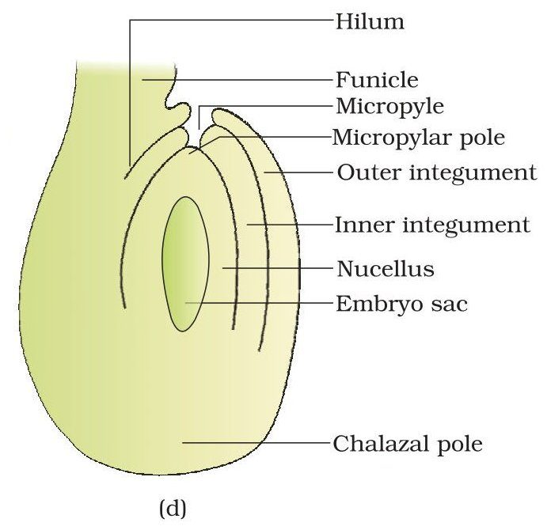
| Chapter | IMCQ 1 mark | IIFill in 1 mark | IIIShort 2 marks | IVShort 3 marks | V–VILong 5 marks | Marks set |
|---|---|---|---|---|---|---|
| Chapter 1Sexual Reproduction in Flowering Plants | 7Q1, 2, 3, 4, 5, 6, 7 | 3Q8, 9, 10 | 4Q11, 12, 13, 14 | 4Q15, 16, 17, 18 | 4Q19, 20, 21, 22 | 50100% |
| Questions set | 7 × 1 = 7 | 3 × 1 = 3 | 4 × 2 = 8 | 4 × 3 = 12 | 4 × 5 = 20 | 50 |
| To answer | 7 | 3 | 2 of 4 | 2 of 4 | 1 of 2 + 1 of 2 | 30 |
The exine of the pollen grain is made of sporopollenin, one of the most resistant organic materials known. It withstands high temperatures and strong acids and alkalis, and no enzyme degrades it, so pollen grains survive as fossils.
| Albuminous seeds | Non-albuminous seeds |
|---|---|
| Retain part of the endosperm in the mature seed (not fully used during embryo development) | Endosperm is completely consumed by the developing embryo |
| Wheat, maize, castor, coconut | Pea, groundnut, beans |
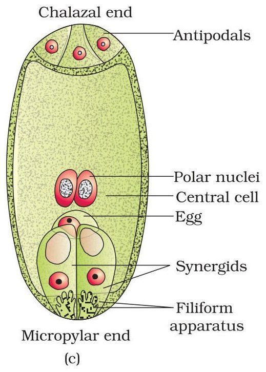
Plants use two abiotic agents (wind and water) and one biotic agent (animals).
| Chapter | IMCQ 1 mark | IIFill in 1 mark | IIIShort 2 marks | IVShort 3 marks | V–VILong 5 marks | Marks set |
|---|---|---|---|---|---|---|
| Chapter 2Human Reproduction | 7Q1, 2, 3, 4, 5, 6, 7 | 3Q8, 9, 10 | 4Q11, 12, 13, 14 | 4Q15, 16, 17, 18 | 4Q19, 20, 21, 22 | 50100% |
| Questions set | 7 × 1 = 7 | 3 × 1 = 3 | 4 × 2 = 8 | 4 × 3 = 12 | 4 × 5 = 20 | 50 |
| To answer | 7 | 3 | 2 of 4 | 2 of 4 | 1 of 2 + 1 of 2 | 30 |
The male accessory glands are the paired seminal vesicles, a prostate and the paired bulbourethral glands. Their secretions form the seminal plasma, rich in fructose, calcium and certain enzymes; the secretions of the bulbourethral glands also lubricate the penis.
| Menarche | Menopause |
|---|---|
| The first menstruation, which begins at puberty | The stopping of menstrual cycles, around 50 years of age |
| Marks the start of the reproductive phase | Marks the end of the reproductive phase |
Parturition is the delivery of the foetus (childbirth), induced by a complex neuroendocrine mechanism. Signals from the fully developed foetus and placenta cause mild uterine contractions (the foetal ejection reflex), which trigger release of oxytocin from the maternal pituitary. Oxytocin causes stronger uterine contractions, leading to expulsion of the baby.
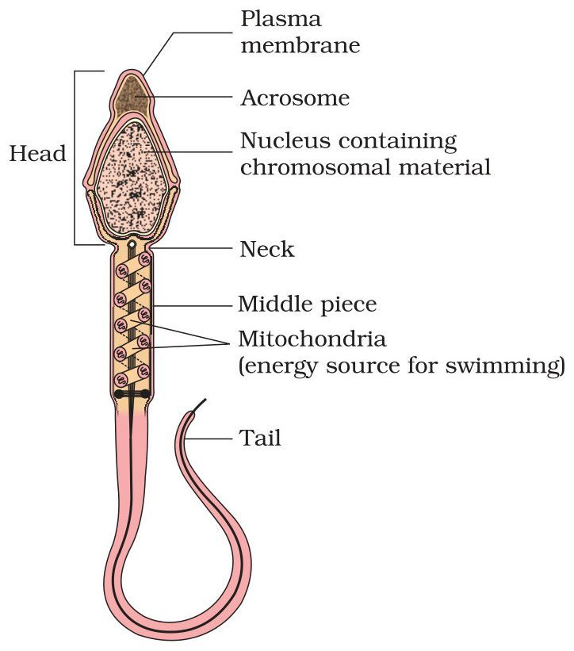
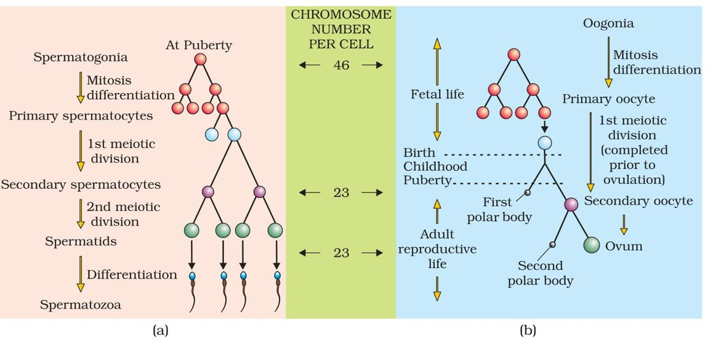
| Spermatogenesis | Oogenesis |
|---|---|
| Occurs in the testis (seminiferous tubules) | Occurs in the ovary |
| Begins at puberty and continues throughout life | Initiated during embryonic development; millions of oogonia form in each foetal ovary; no more are formed after birth |
| Spermatogonium (2n) → primary spermatocyte (2n) → meiosis I → two secondary spermatocytes (n) → meiosis II → four spermatids (n) → spermiogenesis → four sperms | Oogonium → primary oocyte (arrested in prophase I) → meiosis I (unequal) → large haploid secondary oocyte + tiny first polar body → meiosis II completes only after sperm entry → one ovum + second polar body |
| Continuous; sperm released by spermiation | Cyclic; secondary oocyte released at ovulation from the Graafian follicle |
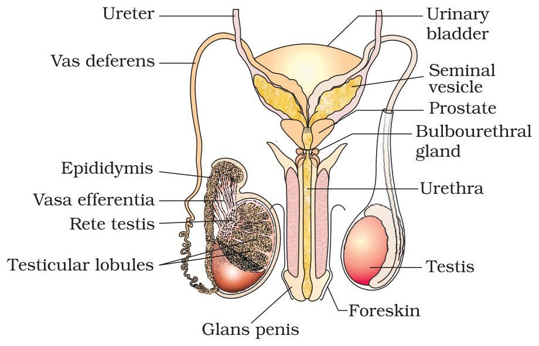
| Chapter | IMCQ 1 mark | IIFill in 1 mark | IIIShort 2 marks | IVShort 3 marks | V–VILong 5 marks | Marks set |
|---|---|---|---|---|---|---|
| Chapter 3Reproductive Health | 7Q1, 2, 3, 4, 5, 6, 7 | 3Q8, 9, 10 | 4Q11, 12, 13, 14 | 4Q15, 16, 17, 18 | 4Q19, 20, 21, 22 | 50100% |
| Questions set | 7 × 1 = 7 | 3 × 1 = 3 | 4 × 2 = 8 | 4 × 3 = 12 | 4 × 5 = 20 | 50 |
| To answer | 7 | 3 | 2 of 4 | 2 of 4 | 1 of 2 + 1 of 2 | 30 |
An ideal contraceptive should be user-friendly, easily available, effective and reversible, with no or least side effects. It should in no way interfere with the sexual drive, desire and/or the sexual act of the user.
Gonorrhoea, syphilis, genital herpes, chlamydiasis, genital warts, trichomoniasis, hepatitis B and HIV leading to AIDS (any four).
Natural methods work on the principle of avoiding the chances of ovum and sperm meeting.
| Chapter | IMCQ 1 mark | IIFill in 1 mark | IIIShort 2 marks | IVShort 3 marks | V–VILong 5 marks | Marks set |
|---|---|---|---|---|---|---|
| Chapter 4Principles of Inheritance and Variation | 7Q1, 2, 3, 4, 5, 6, 7 | 3Q8, 9, 10 | 4Q11, 12, 13, 14 | 4Q15, 16, 17, 18 | 4Q19, 20, 21, 22 | 50100% |
| Questions set | 7 × 1 = 7 | 3 × 1 = 3 | 4 × 2 = 8 | 4 × 3 = 12 | 4 × 5 = 20 | 50 |
| To answer | 7 | 3 | 2 of 4 | 2 of 4 | 1 of 2 + 1 of 2 | 30 |
A test cross is a cross in which an organism showing the dominant phenotype (whose genotype is to be found) is crossed with the recessive parent, instead of selfing. It is performed to determine the genotype of the dominant individual: all dominant progeny means it is homozygous (TT); a 1 : 1 ratio of dominant to recessive means it is heterozygous (Tt).
In incomplete dominance the F1 has a phenotype that does not resemble either parent and is in between the two. Example: flower colour in snapdragon (Antirrhinum) — red (RR) × white (rr) gives pink (Rr) F1; F2 = 1 red : 2 pink : 1 white (phenotypic ratio equals the genotypic ratio).
| XO type | ZW type |
|---|---|
| Males are heterogametic: some sperms carry X, others none (XO males, XX females) | Females are heterogametic: they produce Z and W eggs; males are ZZ |
| e.g. many insects, including the grasshopper | e.g. birds |
Aneuploidy is the gain or loss of a chromosome(s), resulting from failure of segregation of chromatids during cell division. Example: Down’s syndrome (trisomy of chromosome 21), Klinefelter’s syndrome (47, XXY) and Turner’s syndrome (45, XO).
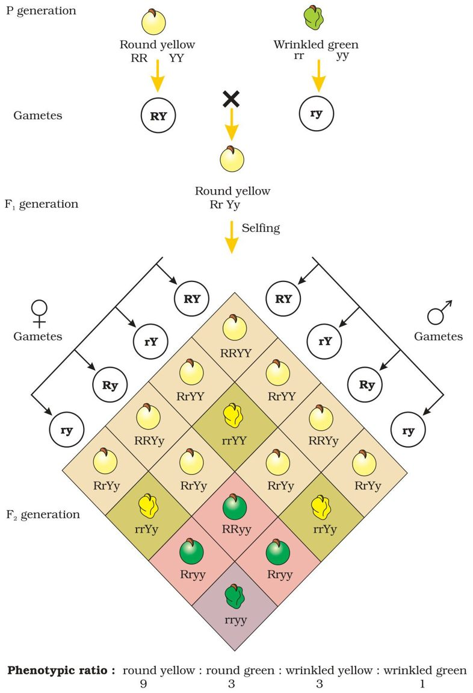
| Chapter | IMCQ 1 mark | IIFill in 1 mark | IIIShort 2 marks | IVShort 3 marks | V–VILong 5 marks | Marks set |
|---|---|---|---|---|---|---|
| Chapter 5Molecular Basis of Inheritance | 7Q1, 2, 3, 4, 5, 6, 7 | 3Q8, 9, 10 | 4Q11, 12, 13, 14 | 4Q15, 16, 17, 18 | 4Q19, 20, 21, 22 | 50100% |
| Questions set | 7 × 1 = 7 | 3 × 1 = 3 | 4 × 2 = 8 | 4 × 3 = 12 | 4 × 5 = 20 | 50 |
| To answer | 7 | 3 | 2 of 4 | 2 of 4 | 1 of 2 + 1 of 2 | 30 |
Erwin Chargaff observed that for a double-stranded DNA the ratio between adenine and thymine and between guanine and cytosine is constant and equals one (A = T, G = C; i.e. purines = pyrimidines).
A transcription unit in DNA is the segment that is transcribed into RNA. It is defined primarily by three regions: a promoter, the structural gene and a terminator. The promoter is located towards the 5′-end (upstream) of the structural gene and the terminator towards the 3′-end (downstream) of the coding strand.
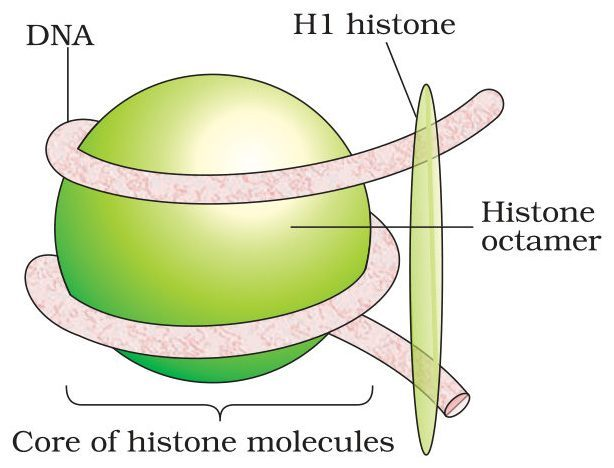
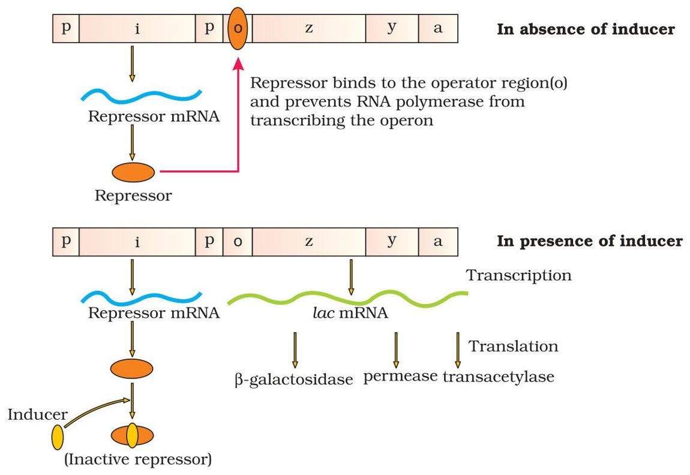
| Chapter | IMCQ 1 mark | IIFill in 1 mark | IIIShort 2 marks | IVShort 3 marks | V–VILong 5 marks | Marks set |
|---|---|---|---|---|---|---|
| Chapter 6Evolution | 7Q1, 2, 3, 4, 5, 6, 7 | 3Q8, 9, 10 | 4Q11, 12, 13, 14 | 4Q15, 16, 17, 18 | 4Q19, 20, 21, 22 | 50100% |
| Questions set | 7 × 1 = 7 | 3 × 1 = 3 | 4 × 2 = 8 | 4 × 3 = 12 | 4 × 5 = 20 | 50 |
| To answer | 7 | 3 | 2 of 4 | 2 of 4 | 1 of 2 + 1 of 2 | 30 |
| Homologous organs | Analogous organs |
|---|---|
| Same structure (common ancestry) but different functions | Different structure (not anatomically similar) but same function |
| Result of divergent evolution | Result of convergent evolution |
| Forelimbs of whales, bats, cheetah and human; thorn of Bougainvillea and tendril of Cucurbita | Wings of butterfly and bird; eye of octopus and mammals; flippers of penguins and dolphins; sweet potato and potato |
Adaptive radiation is the process of evolution of different species in a given geographical area starting from a point and literally radiating to other areas of geography (habitats). Examples: Darwin’s finches of the Galapagos Islands (many varieties of beaks evolved from the original seed-eating finches) and the Australian marsupials, which evolved from an ancestral stock within the Australian island continent.
The French naturalist Lamarck said that evolution of life forms occurred, driven by use and disuse of organs. Giraffes, in an attempt to forage leaves on tall trees, had to adapt by elongating their necks; as they passed on this acquired character to succeeding generations, giraffes slowly came to acquire long necks. Nobody believes this conjecture any more.
Sometimes a change in allele frequency (genetic drift) is so different in a new sample of a population that they become a different species. The original drifted population becomes the founders, and this effect is called the founder effect.
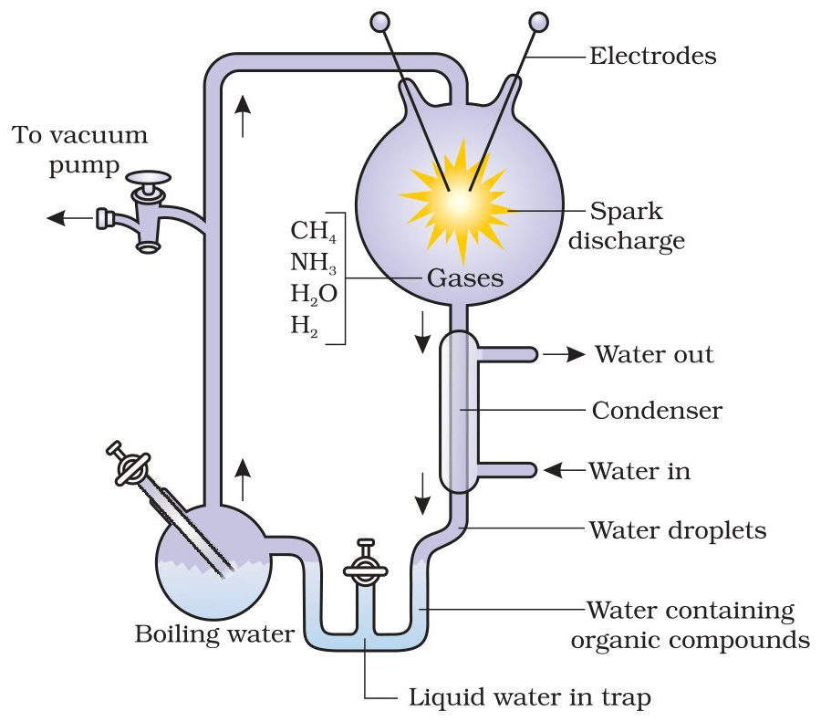
| Chapter | IMCQ 1 mark | IIFill in 1 mark | IIIShort 2 marks | IVShort 3 marks | V–VILong 5 marks | Marks set |
|---|---|---|---|---|---|---|
| Chapter 7Human Health and Disease | 7Q1, 2, 3, 4, 5, 6, 7 | 3Q8, 9, 10 | 4Q11, 12, 13, 14 | 4Q15, 16, 17, 18 | 4Q19, 20, 21, 22 | 50100% |
| Questions set | 7 × 1 = 7 | 3 × 1 = 3 | 4 × 2 = 8 | 4 × 3 = 12 | 4 × 5 = 20 | 50 |
| To answer | 7 | 3 | 2 of 4 | 2 of 4 | 1 of 2 + 1 of 2 | 30 |
Typhoid fever is caused by Salmonella typhi, which generally enters the small intestine through contaminated food and water and migrates to other organs through blood. Sustained high fever (39° to 40°C), weakness, stomach pain, constipation, headache and loss of appetite are common symptoms. It is confirmed by the Widal test.
| Active immunity | Passive immunity |
|---|---|
| The host produces its own antibodies on exposure to antigens (living or dead microbes or other proteins) | Ready-made antibodies are directly given to protect the body against foreign agents |
| Slow; takes time to give its full effective response | Quick response |
| e.g. infection, vaccination | e.g. IgA in colostrum, antibodies through the placenta, anti-tetanus serum, anti-venom |
| Benign tumours | Malignant tumours |
|---|---|
| Normally remain confined to their original location | A mass of proliferating neoplastic cells that grow very rapidly, invading and damaging surrounding normal tissues |
| Do not spread to other parts; cause little damage | Cells slough off and reach distant sites through blood, starting new tumours — metastasis |
The exaggerated response of the immune system to certain antigens present in the environment is allergy; the substances to which such a response is produced are called allergens (e.g. mites in dust, pollens, animal dander). The antibodies produced are of the IgE type. Allergy is due to the release of chemicals like histamine and serotonin from the mast cells.
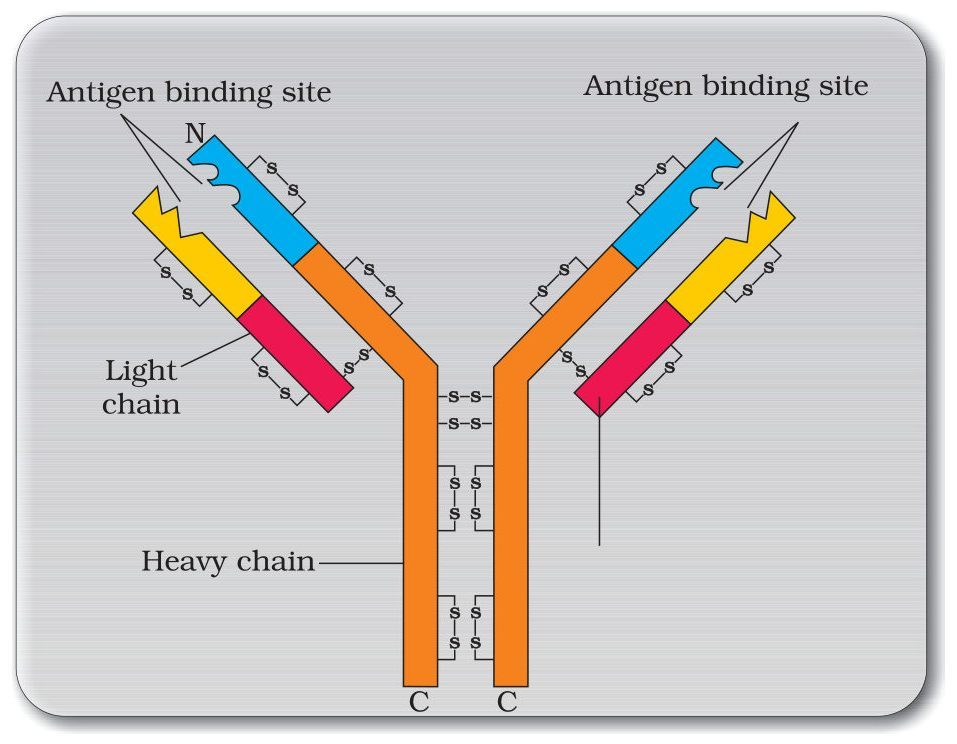
Drop in academic performance; unexplained absence from school/college; lack of interest in personal hygiene; withdrawal, isolation, depression, fatigue; aggressive and rebellious behaviour; deteriorating relationships with family and friends; loss of interest in hobbies; change in sleeping and eating habits; fluctuations in weight, appetite, etc.
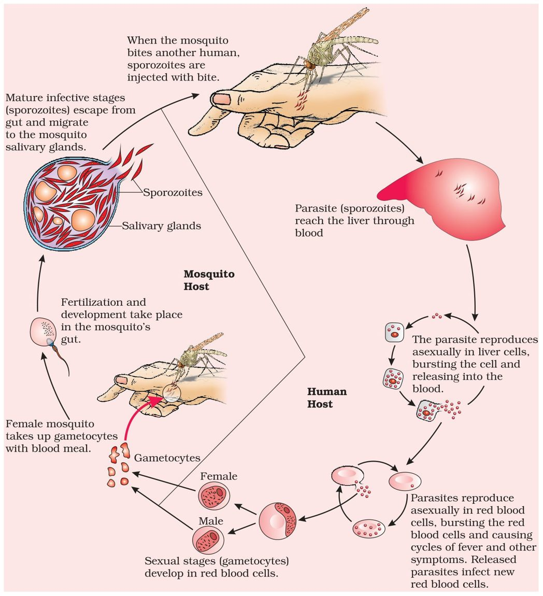
| Chapter | IMCQ 1 mark | IIFill in 1 mark | IIIShort 2 marks | IVShort 3 marks | V–VILong 5 marks | Marks set |
|---|---|---|---|---|---|---|
| Chapter 8Microbes in Human Welfare | 7Q1, 2, 3, 4, 5, 6, 7 | 3Q8, 9, 10 | 4Q11, 12, 13, 14 | 4Q15, 16, 17, 18 | 4Q19, 20, 21, 22 | 50100% |
| Questions set | 7 × 1 = 7 | 3 × 1 = 3 | 4 × 2 = 8 | 4 × 3 = 12 | 4 × 5 = 20 | 50 |
| To answer | 7 | 3 | 2 of 4 | 2 of 4 | 1 of 2 + 1 of 2 | 30 |
BOD (biochemical oxygen demand) refers to the amount of oxygen that would be consumed if all the organic matter in one litre of water were oxidised by bacteria. It is an indirect measure of the organic matter present in water. The greater the BOD of waste water, the more is its polluting potential.
Alexander Fleming, while working on Staphylococci bacteria, observed a mould growing in an unwashed culture plate around which Staphylococci could not grow; the chemical, penicillin, was produced by the mould Penicillium notatum. Its full potential as an effective antibiotic was established by Ernest Chain and Howard Florey. Fleming, Chain and Florey were awarded the Nobel Prize in 1945.
Biofertilisers are organisms that enrich the nutrient quality of the soil. The main sources are bacteria, fungi and cyanobacteria. Examples: Rhizobium (root nodules of legumes), Azospirillum and Azotobacter (free-living), Glomus (mycorrhiza), cyanobacteria such as Anabaena, Nostoc and Oscillatoria.
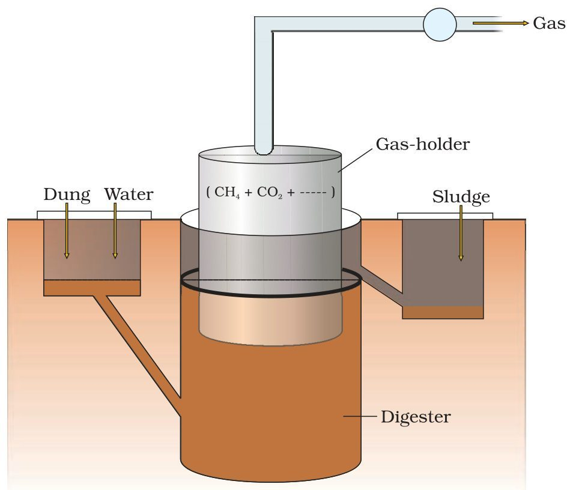
| Chapter | IMCQ 1 mark | IIFill in 1 mark | IIIShort 2 marks | IVShort 3 marks | V–VILong 5 marks | Marks set |
|---|---|---|---|---|---|---|
| Chapter 9Biotechnology: Principles and Processes | 4Q1, 2, 3, 4 | 2Q8, 9 | 2Q11, 12 | 2Q15, 16 | 3Q19, 20, 21 | 3162% |
| Chapter 10Biotechnology and its Applications | 3Q5, 6, 7 | 1Q10 | 2Q13, 14 | 2Q17, 18 | 1Q22 | 1938% |
| Questions set | 7 × 1 = 7 | 3 × 1 = 3 | 4 × 2 = 8 | 4 × 3 = 12 | 4 × 5 = 20 | 50 |
| To answer | 7 | 3 | 2 of 4 | 2 of 4 | 1 of 2 + 1 of 2 | 30 |
A palindrome in DNA is a sequence of base pairs that reads the same on the two strands when the orientation of reading is kept the same (5′→3′ on both). Each restriction endonuclease recognises a specific palindromic sequence. Example (EcoRI site):
5′ — GAATTC — 3′
3′ — CTTAAG — 5′
When a recombinant DNA is inserted within the coding sequence of an enzyme, β-galactosidase, the gene for that enzyme is inactivated: insertional inactivation. In the presence of a chromogenic substrate, colonies whose plasmid has no insert give blue colour; colonies with the insert (recombinants) do not produce colour, so they are identified as colourless (white) colonies.
The Bt toxin protein exists in Bacillus thuringiensis as inactive protoxins. Once an insect ingests it, the protoxin is converted into an active toxin due to the alkaline pH of the gut, which solubilises the crystals. The activated toxin binds to the surface of midgut epithelial cells and creates pores, causing cell swelling and lysis and eventually death of the insect.
Animals that have had their DNA manipulated to possess and express an extra (foreign) gene are called transgenic animals (e.g. transgenic rats, rabbits, pigs, sheep, cows and fish; over 95% of existing ones are mice). Uses (any two): study of normal physiology and development; study of disease; production of biological products (e.g. α-1-antitrypsin to treat emphysema); vaccine safety testing; chemical safety (toxicity) testing.
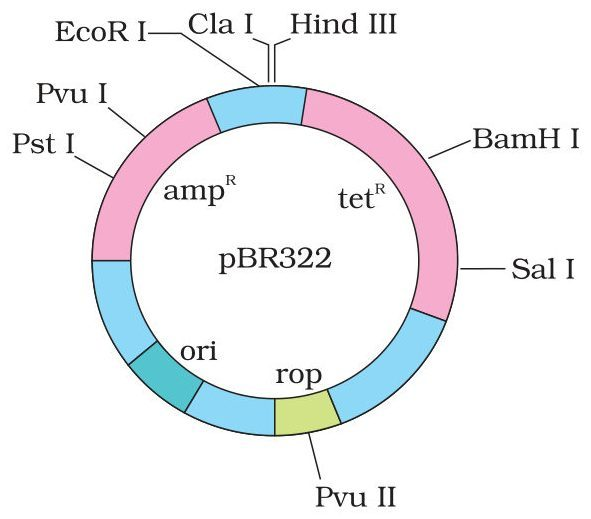
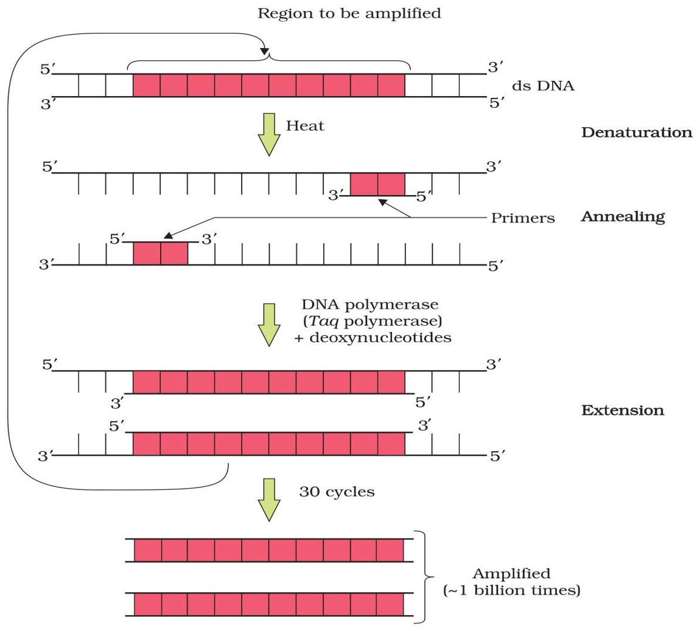
| Chapter | IMCQ 1 mark | IIFill in 1 mark | IIIShort 2 marks | IVShort 3 marks | V–VILong 5 marks | Marks set |
|---|---|---|---|---|---|---|
| Chapter 11Organisms and Populations | 3Q1, 2, 3 | 1Q9 | 1Q11 | 1Q15 | 2Q19, 20 | 1938% |
| Chapter 12Ecosystem | 3Q4, 5, 6 | 1Q8 | 1Q12 | 2Q16, 17 | 1Q21 | 1734% |
| Chapter 13Biodiversity and Conservation | 1Q7 | 1Q10 | 2Q13, 14 | 1Q18 | 1Q22 | 1428% |
| Questions set | 7 × 1 = 7 | 3 × 1 = 3 | 4 × 2 = 8 | 4 × 3 = 12 | 4 × 5 = 20 | 50 |
| To answer | 7 | 3 | 2 of 4 | 2 of 4 | 1 of 2 + 1 of 2 | 30 |
Brood parasitism in birds is a type of parasitism in which the parasitic bird lays its eggs in the nest of its host and lets the host incubate them. During evolution, the eggs of the parasitic bird have evolved to resemble the host’s eggs in size and colour, reducing the chances of the host detecting and ejecting them. Example: the cuckoo (koel) laying its eggs in the nest of a crow.
Humboldt observed that within a region, species richness increased with increasing explored area, but only up to a limit. The relationship is a rectangular hyperbola; on a logarithmic scale it is a straight line: log S = log C + Z log A, where S = species richness, A = area, Z = slope of the line (regression coefficient), C = Y-intercept. Z generally lies between 0.1 and 0.2; for very large areas like entire continents the slope is much steeper (0.6 to 1.2).
(i) Habitat loss and fragmentation — the most important cause; (ii) Over-exploitation; (iii) Alien species invasions; (iv) Co-extinctions.
| In situ conservation | Ex situ conservation |
|---|---|
| On-site: the whole ecosystem is protected and biodiversity at all levels is conserved (we save the entire forest to save the tiger) | Off-site: threatened animals and plants are taken out of their natural habitat and protected in special settings |
| Biodiversity hotspots, biosphere reserves, national parks, wildlife sanctuaries, sacred groves (India: 14 biosphere reserves, 90 national parks, 448 wildlife sanctuaries) | Zoological parks, botanical gardens, wildlife safari parks; cryopreservation of gametes, in vitro fertilisation, tissue culture, seed banks |
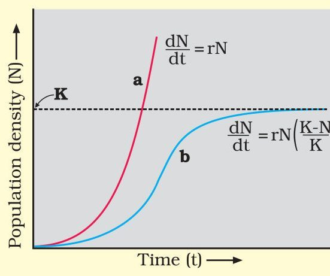